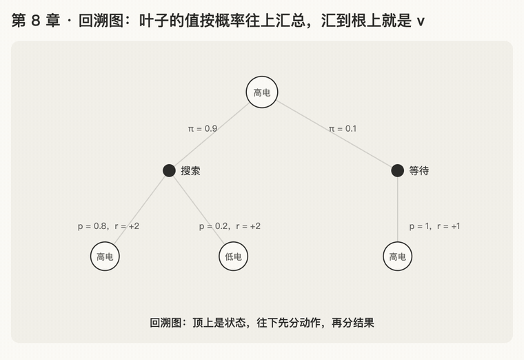

第 8 章 · Bellman 期望方程：今天的价值 = 眼前的奖励 + γ × 明天的价值
本章回答：不跑几千次，能不能直接算出 \(v_\pi\)？各个状态的价值之间有什么关系？书上那张 5×5 网格的数字是怎么来的？
讲解日期：2026-11-13 · 上一章：第 7 章 价值函数 · 下一章：第 9 章 最优价值
对应原文：Sutton & Barto §3.5（L4304–L4374，式 3.14，backup diagram）、例 3.5 网格世界（L4468 起，图 3.2）；CS 285 第 4 讲 L29（"This bit of linear algebra will be important later!"）
本章缩写：Bellman：人名，Richard Bellman（理查德·贝尔曼，动态规划的发明人）；\(v_\pi\)、\(q_\pi\) 见第 7 章；\(P_\pi\)、\(r_\pi\)：按策略 π 合并以后的转移矩阵和奖励向量（第四步）；I = Identity matrix（单位矩阵）。全部缩写见 附录 · 缩写与术语表
讲解
第一步：从回报的递推，推出价值的递推（2026-11-13）
第 3 章有个最重要的式子：\(G_t = R_{t+1} + \gamma G_{t+1}\)。两边都取期望（"从 s 出发、按 π 走"的平均）：
右边 \(\mathbb{E}[G_{t+1}]\) 就是"下一个状态的价值"\(v_\pi(S_{t+1})\)。所以：
白话：今天的价值 = 眼前这一步的奖励 + 打个折的明天的价值，取平均。
类比：房价。 一套房今天值多少？= 今年的租金 + 打个折的"明年这套房值多少"。不用一直算到 100 年后，只要知道明年的房价就行。
这就是 Bellman 期望方程的核心：价值不是孤立的数，每个状态的价值都和它下一步可能去的状态的价值连在一起。
一句话：把 \(G_t = R_{t+1} + \gamma G_{t+1}\) 取期望，就是 \(v_\pi(s)\) = 眼前奖励 + γ × 下一个状态价值，的平均。
第二步：把平均写开：两层加权，式 3.14 一个个符号读（2026-11-13）
"取平均"要考虑两层随机（第 6 章第三步）：先按 π 选动作，再按 p 给结果。写开就是书里的式 3.14（L4309–L4344）：
从里往外读：
- \([r + \gamma v_\pi(s')]\)：某一种具体结果（拿到 r、到了 s'）之后的"总价值"；
- \(\sum_{s', r} p(s', r \mid s, a)[\dots]\)：按环境的概率平均，这就是第 7 章的 \(q_\pi(s, a)\)；
- \(\sum_a \pi(a \mid s)\,q_\pi(s, a)\)：再按策略平均，就是 \(v_\pi(s)\)（第 7 章第四步）。
原文 L4351–L4354 说：对每一组 (a, s', r) 算出它的概率 \(\pi(a \mid s)\,p(s', r \mid s, a)\)，用它给方括号里的数加权，全部加起来，就是一个期望。
用机器人代进去验证（精确值 \(v_\pi(\text{高电}) = 15.828\)，\(v_\pi(\text{低电}) = 13.869\)）：
| 动作 | π | 结果 | p | \(r + 0.9\,v_\pi(s')\) |
|---|---|---|---|---|
| 搜索 | 0.9 | → 高电，+2 | 0.8 | \(2 + 0.9 \times 15.828 = 16.245\) |
| 搜索 | 0.9 | → 低电，+2 | 0.2 | \(2 + 0.9 \times 13.869 = 14.482\) |
| 等待 | 0.1 | → 高电，+1 | 1 | \(1 + 0.9 \times 15.828 = 15.245\) |
- \(q_\pi(\text{高电}, \text{搜索}) = 0.8 \times 16.245 + 0.2 \times 14.482 = 15.892\)
- \(q_\pi(\text{高电}, \text{等待}) = 15.245\)
- \(v_\pi(\text{高电}) = 0.9 \times 15.892 + 0.1 \times 15.245 = 15.828\) ✓
左边是 15.828，右边算出来也是 15.828：价值满足这个方程。
backup diagram（回溯图）（L4355–L4374）：书里画成一棵小树：顶上空心圆是 s，往下分出几个实心点（每个动作），每个实心点再分出几个空心圆（可能的 s'）。方程就是"从叶子往根汇总"：叶子的值往上按概率加权，汇到根上。
一句话：式 3.14 = 先按 p 把结果平均成 q，再按 π 把 q 平均成 v；代进真实价值，左右两边相等。
第三步：几个状态，几个方程：直接解出价值（2026-11-13）
关键想法：式 3.14 对每一个状态都成立。机器人有 2 个状态，就有 2 个方程，未知数是 \(v(\text{高})\)、\(v(\text{低})\) 两个数。
把高电那个方程整理一下（数字照第二步）：
右边全是 \(v(\text{高})\)、\(v(\text{低})\) 的一次式。低电那个方程也一样。两个一次方程、两个未知数，就是初中的二元一次方程组，能直接解出来：15.828 和 13.869。
这比第 7 章跑 2000 次好在哪：
| 第 7 章：跑很多次取平均 | 本章：解方程 | |
|---|---|---|
| 要知道 p 吗 | 不用，跑就行 | 要，方程里有 p |
| 结果 | 近似（15.84） | 精确（15.828） |
| 状态很多时 | 还能用 | 方程太多，解不动 |
原文 L4392 说：\(v_\pi\) 是它 Bellman 方程的唯一解。第 10 章会讲一种不用解方程组、而是"反复代入"的算法，状态多时更好用。
一句话：每个状态一个 Bellman 方程，n 个状态 n 个一次方程，知道 p 就能直接解出全部价值。
第四步：书上的 5×5 网格：随机乱走，A 格值 8.8（2026-11-13）
例 3.5 网格世界（L4468 起，图 3.2）：
- 5 × 5 的格子，每格是一个状态；每格可以往上下左右走，确定地走一格；
- 撞墙：原地不动，奖励 −1；
- 特殊格 A（第 1 行第 2 列）：不管做什么动作，+10，并被传送到 A'（最下一行第 2 列）；
- 特殊格 B（第 1 行第 4 列）：任何动作 +5，传送到 B'（第 3 行第 4 列）；
- 其余移动奖励 0；γ = 0.9；策略：四个方向各 0.25，完全随机。
25 个状态、25 个方程，用代码一次解出来（附录）：
3.3 8.8 4.4 5.3 1.5
1.5 3.0 2.3 1.9 0.5
0.1 0.7 0.7 0.4 -0.4
-1.0 -0.4 -0.4 -0.6 -1.2
-1.9 -1.3 -1.2 -1.4 -2.0
和书上图 3.2 右边一模一样。读几个数：
- A 格是 8.8，比 +10 还小：拿完 10 被传到最下面的 A'，那里靠墙，随机乱走常撞墙扣分（−1.3），所以 \(8.8 \approx 10 + 0.9 \times (-1.3)\)；
- B 格是 5.3，比 +5 还大：传到的 B' 在中间（0.4），不容易撞墙，后面还有点赚头；
- 底边和角落是负数：随机策略很容易撞墙，越靠边越亏。
验证一下 A 格的方程：A 格任何动作都 +10 到 A'（A' 的价值 −1.3）：\(v(A) = 10 + 0.9 \times (-1.3) = 8.83 \approx 8.8\) ✓（格子里的数四舍五入到一位小数，所以只差一点点）。
一句话：网格的 25 个价值是 25 个方程的解；A 格 8.8 小于 10，因为被传到容易撞墙的 A'。
动画演示：网格上每格的价值 = 四个邻居的平均（打折）+ 奖励

可交互版：animations/l08-bellman.html（要能点按钮、拖滑块，需要用本地服务打开，见 animations/README.md"跑起来看"）。
怎么看：
- 5×5 网格，颜色越深价值越高（数字是图 3.2 的解）；
- 每帧挑一格，画出四个方向的箭头：每个方向 0.25 × [奖励 + 0.9 × 邻居价值]，加起来正好等于这一格（第二步）；
- 走到 A 格时，四个箭头都指向 A'，\(10 + 0.9 \times (-1.3)\)（第四步）；
- 点任意一格，自己看它的方程；滑块调 γ，看全图怎么变（γ 越小越"近视"，A、B 附近才亮）。
动画演示 2：回溯图：叶子的值按概率往上汇总（第二步）

可交互版：animations/l08b-backup.html（无滑块，用 → 单步看每一层）
怎么看：
- 前三帧算三片叶子：r + 0.9 × v(s')，就是第二步表格的最后一列（16.245、14.482、15.245）。
- 第四、五帧按 p 汇到动作点，得到 q(高电, 搜索) = 15.892 和 q(高电, 等待) = 15.245（第二步"从里往外读"的第 2 层）。
- 最后一帧按 π 汇到根：0.9 × 15.892 + 0.1 × 15.245 = 15.828，和左边的 v(高电) 一样（第 3 层）。
练习与作答记录
题 1：用 \(v_\pi(\text{高电}) = 15.828\)、\(v_\pi(\text{低电}) = 13.869\)，按第二步的方法算 \(q_\pi(\text{低电}, \text{搜索})\)。（低电搜索：0.7 → 低电 +2，0.3 → 高电 −3。）
作答：（待作答）
题 2：网格里 B 格的价值是 5.3，B' 的价值约 0.4。按第四步验证 A 格的方法，写出 B 格的方程并算一算。
作答：（待作答）
题 3：第三步说"知道 p 才能解方程"。为什么第 7 章跑很多次取平均就不需要 p？
作答：（待作答）
口诀
今天的价值 = 眼前奖励 + γ × 明天的价值，再取平均；
先按 p 平均成 q，再按 π 平均成 v；
一个状态一个方程，知道 p 就能解；
A 格八点八：拿了十块被扔到墙边。
本章复习卡片
- R13（Bellman 期望方程 式 3.14：\(v_\pi(s) = \sum_a \pi \sum_{s', r} p\,[r + \gamma v_\pi(s')]\)，从里往外读）
- R14（网格世界：为什么 A 格 8.8 < 10、B 格 5.3 > 5）
附录 · 延伸阅读
留给以后深入学习用，不影响本章主线。★ 是建议先读的。L 行号指
materials/text/books/sutton-barto-RLbook2020.txt。
推荐阅读
| 读什么 | 读哪里 | 读它为了什么 |
|---|---|---|
| ★ Sutton & Barto §3.5 | L4304–L4374（式 3.14、backup diagram） | 本章原文 |
| ★ Sutton & Barto 例 3.5 | L4468 起，图 3.2（文本版排版乱，建议对照 PDF p.60） | 网格世界原题；习题 3.14–3.17 都围绕它 |
| CS 285 第 4 讲 | lec-04.txt L15–L29、L75–L91 |
转移写成矩阵、"这点线性代数后面很重要"、平稳分布 |
| Spinning Up "Key Concepts" | rl_intro.rst 的 Bellman Equations 一节 |
深度 RL 的写法 \(V^\pi(s) = \mathbb{E}[r + \gamma V^\pi(s')]\) |
| Hands-on-RL 第 3 章 | chinese/Hands-on-RL/第3章-马尔可夫决策过程.ipynb |
中文：用矩阵求逆解 Bellman 方程的代码 |
数学原理
- 矩阵形式：把每个状态的"按 π 合并后的一步平均奖励"排成向量 \(r_\pi\)，一步转移概率排成矩阵 \(P_\pi\)（第 s 行第 s' 列 = 从 s 一步到 s' 的概率），方程变成 \(v = r_\pi + \gamma P_\pi v\)，整理得 \((I - \gamma P_\pi)\,v = r_\pi\)，\(v = (I - \gamma P_\pi)^{-1} r_\pi\)。
- 为什么解唯一：γ < 1 时 \(I - \gamma P_\pi\) 一定可逆（\(P_\pi\) 每行加起来是 1，乘 γ 以后"缩"了），所以只有一组解（L4392）。
- 计算量：解 n 个方程大约要 \(n^3\) 次运算。25 个状态很快，\(10^{20}\) 个状态（双陆棋，L5081）就不可能了，第 10 章换成迭代法，第 17 章换成近似。
- 对 q 的 Bellman 方程：\(q_\pi(s, a) = \sum_{s', r} p\,[r + \gamma \sum_{a'} \pi(a' \mid s') q_\pi(s', a')]\)（把第 7 章第四步两个式子反过来接）。
公式清单
| 公式 | 意思 |
|---|---|
| \(v_\pi(s) = \mathbb{E}_\pi[R_{t+1} + \gamma v_\pi(S_{t+1}) \mid S_t = s]\) | 期望形式 |
| \(v_\pi(s) = \sum_a \pi(a \mid s)\sum_{s', r} p(s', r \mid s, a)[r + \gamma v_\pi(s')]\) | Bellman 期望方程（式 3.14） |
| \(v = r_\pi + \gamma P_\pi v \Rightarrow v = (I - \gamma P_\pi)^{-1} r_\pi\) | 矩阵形式、直接解 |
| \(q_\pi(s, a) = \sum_{s', r} p\,[r + \gamma \sum_{a'}\pi(a' \mid s')\,q_\pi(s', a')]\) | q 的 Bellman 方程 |
代码对照：把本章的数字用代码算一遍
代码在
cs285-deep-rl/solutions/chapter-code/ch08_bellman.py（网格定义在rl_envs.py的gridworld_5x5()），测试tests/test_ch05_09.py。
同一章的 Jupyter notebook：cs285-deep-rl/solutions/chapter-code/notebooks/ch08_bellman.ipynb（讲解和代码放在一起，一格一格边读边跑；代码都写在格子里，Colab 也能直接打开）。
bash cd cs285-deep-rl/solutions/chapter-code uv run python ch08_bellman.py
| 讲义 | 代码 | 跑出来 |
|---|---|---|
| 机器人两个方程 | solve_v(P, pi, 0.9) |
15.828、13.869 |
| 代回去验证 | bellman_rhs(P, pi, v, 0.9, s) |
右边也是 15.828、13.869 |
| 网格 25 个方程 | solve_v(G, uniform_policy(G), 0.9) |
图 3.2 右（A 8.8，B 5.3） |
关键几行：
r_pi[s] += pa * p * r # 按 π、p 合并出一步平均奖励
P_pi[s, ns] += pa * p # 合并出一步转移概率
np.linalg.solve(np.eye(n) - gamma * P_pi, r_pi) # (I − γP_π) v = r_π
代码里才看得到的：np.linalg.solve 比先求逆再相乘更快也更准，解方程组时一律用它。第 10 章会看到另一种算法：不解方程，而是从 0 开始反复代入式 3.14，数会一轮轮逼近同一个答案。
自己改一改（不影响练习答案）：
solve_v(P, pi, 0.5)→ [3.49, 1.766]，和第 7 章跑很多局估的 3.483 对得上。- 把低电的策略改成"必充电"（
{0: 0.0, 1: 0.0, 2: 1.0}），solve_v(P, pi2, 0.9)→ [16.351, 14.716]，两个状态都比原来的 15.828、13.869 高：换策略，价值就跟着变。